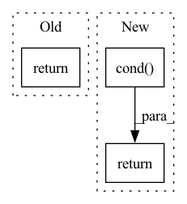

Pattern ID :24384

Before Change
if unvmap_pred.ndim == 0:
// Fast path
return lax.cond(pred, true_fun, false_fun, operand)
else:
def _cond(op):
After Change
false_dummy = jax.tree_map(_empty, false_shape)
true_vals = lax.cond(_unvmap_any, true_fun, lambda _: true_dummy, operand)
false_vals = lax.cond(_unvmap_all, lambda _: false_dummy, false_fun, operand)
keep = lambda a, b: jnp.where(pred, a, b)
return jax.tree_map(keep, true_vals, false_vals)
def maybe(pred, fun, operand):
In pattern: SUPERPATTERN
Frequency: 5
Non-data size: 3
Instances
Fragment ID: 75716123
Project Name: patrick-kidger/diffrax
Commit Name: 99105a607c66a600baee3d2519dbc63eee6ea5b5
Time: 2021-10-12
Author: 33688385+patrick-kidger@users.noreply.github.com
File Name: diffrax/misc/cond.py
M Class Name: AnonimousClass
N Class Name: AnonimousClass
M Method Name: cond(4)
N Method Name: cond(4)
M Parent Class:
N Parent Class:
M File Name: diffrax/misc/cond.py
N File Name: diffrax/misc/cond.py
M Start Line: 15
M End Line: 26
N Start Line: 32
N End Line: 44
'>
Before Change
)
return fun2(out)
return lax.cond(unvmap_pred, _fun, lambda _: operand, None)
def _fun(cond_fun, body_fun):
After Change
def _call(x):
return lax.cond(pred, fun, _identity, x)
return lax.cond(unvmap_pred, _call, _identity, operand)
def _fun(cond_fun, body_fun):
def __fun(data):
'>
Fragment ID: 75716122
Project Name: patrick-kidger/diffrax
Commit Name: aab43da2ec093630b261d883ce83a436f11e2eba
Time: 2021-10-14
Author: 33688385+patrick-kidger@users.noreply.github.com
File Name: diffrax/misc/bounded_while_loop.py
M Class Name: AnonimousClass
N Class Name: AnonimousClass
M Method Name: _maybe(3)
N Method Name: _maybe(4)
M Parent Class:
N Parent Class:
M File Name: diffrax/misc/bounded_while_loop.py
N File Name: diffrax/misc/bounded_while_loop.py
M Start Line: 7
M End Line: 84
N Start Line: 36
N End Line: 41
'>
Before Change
def fallback_pth_root(prev: jnp.array, step: jnp.ndarray, stat: jnp.array, p: int, eps: float):
new_p, error = matrix_inverse_pth_root(stat, step, p, ridge_epsilon=eps)
return select_preconditioner(error, new_p, prev)
def merge_small_dims(shape_to_merge, max_dim):
After Change
def fallback_pth_root(prev: jnp.array, step: jnp.ndarray, stat: jnp.array, p: int, eps: float):
new_p, error = matrix_inverse_pth_root(stat, step, p, ridge_epsilon=eps)
failure = _skip(error)
return lax.cond(failure, lambda: prev, lambda: new_p), failure
def merge_small_dims(shape_to_merge, max_dim):
'>
Fragment ID: 75716127
Project Name: homebrewnlp/olmax
Commit Name: ce8991586b9e13ade2e75bf01461d0dc6d30f2d4
Time: 2022-11-07
Author: 39779310+ClashLuke@users.noreply.github.com
File Name: src/shampoo.py
M Class Name: AnonimousClass
N Class Name: AnonimousClass
M Method Name: fallback_pth_root(5)
N Method Name: fallback_pth_root(5)
M Parent Class:
N Parent Class:
M File Name: src/shampoo.py
N File Name: src/shampoo.py
M Start Line: 230
M End Line: 230
N Start Line: 234
N End Line: 235
'>
Before Change
out = jnp.einsum("bkrf,kg,kg->bgrf", out, wgt0, mask)
out = activate(ctx, out)
out = jnp.einsum("bkrf,kg,kg->bgrf", out, wgt1, mask)
return out.reshape(original_shape)
After Change
out = jnp.einsum("bkrf,kg,kg->bgrf", out, wgt1, mask)
return out.reshape(original_shape)
previous = lax.cond(depth == i, _fn, lambda: previous)
return previous
'>
Fragment ID: 75716124
Project Name: homebrewnlp/homebrewnlp-jax
Commit Name: 167ee1fba2f6eaf7e7accee824801407695d0beb
Time: 2022-09-01
Author: 39779310+ClashLuke@users.noreply.github.com
File Name: src/model/mixer.py
M Class Name: AnonimousClass
N Class Name: AnonimousClass
M Method Name: mix(3)
N Method Name: mix(3)
M Parent Class:
N Parent Class:
M File Name: src/model/mixer.py
N File Name: src/model/mixer.py
M Start Line: 22
M End Line: 29
N Start Line: 21
N End Line: 35